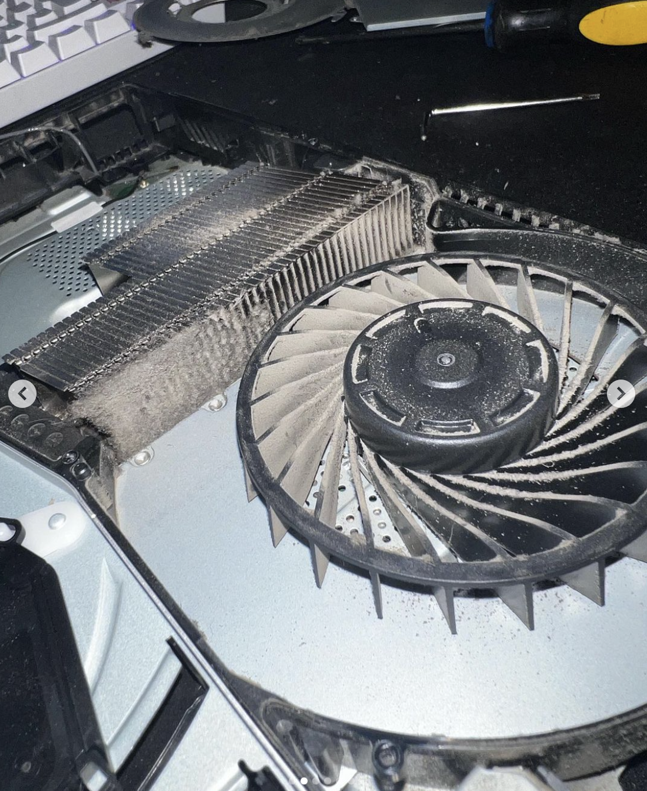
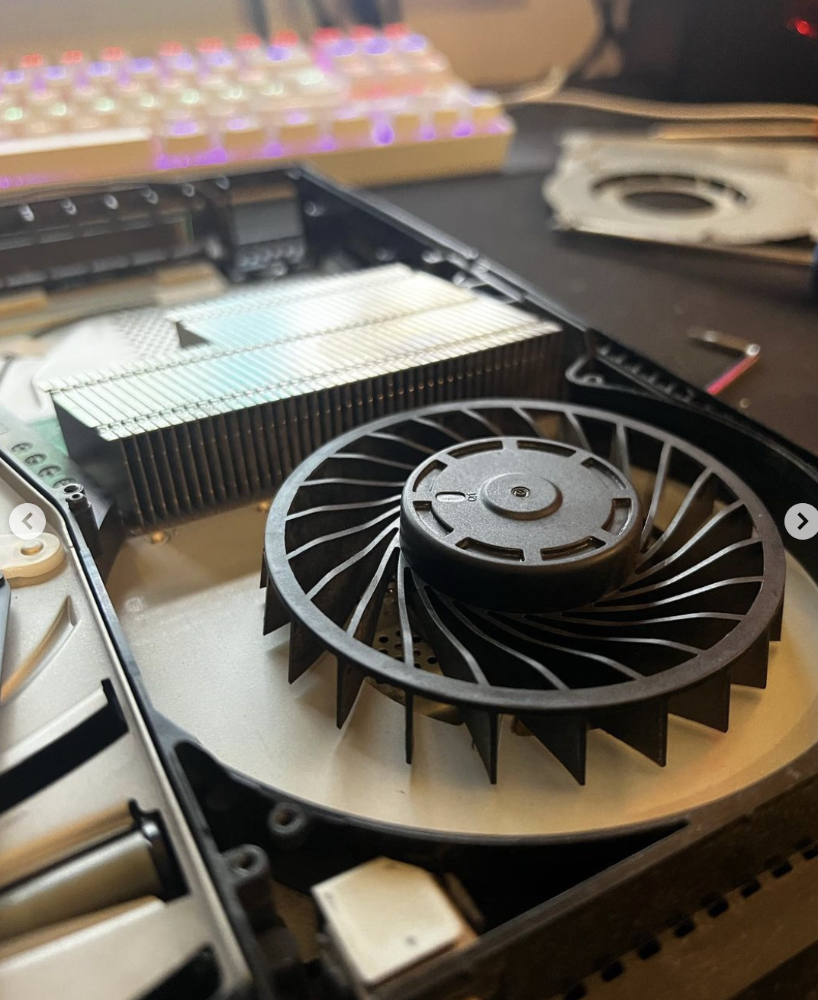
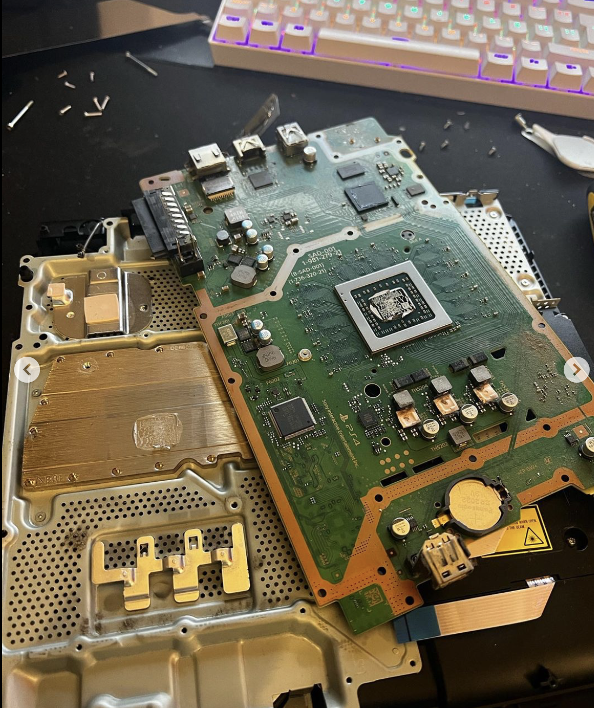
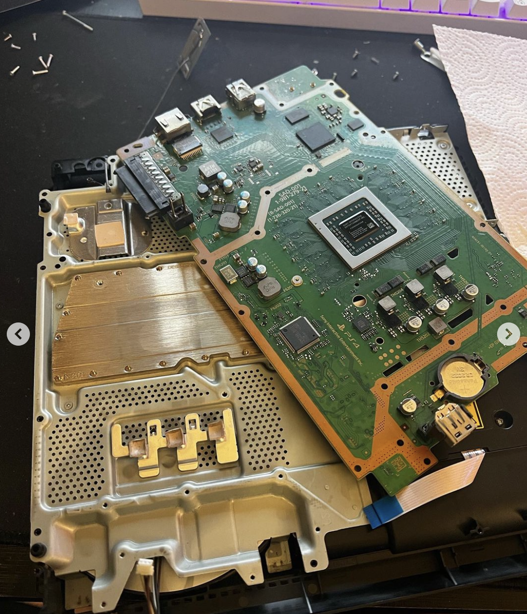
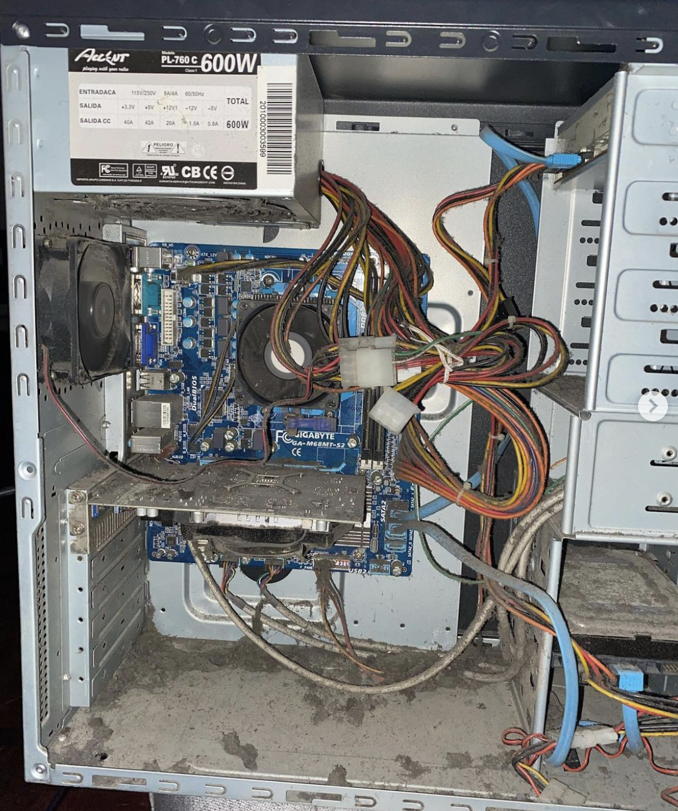
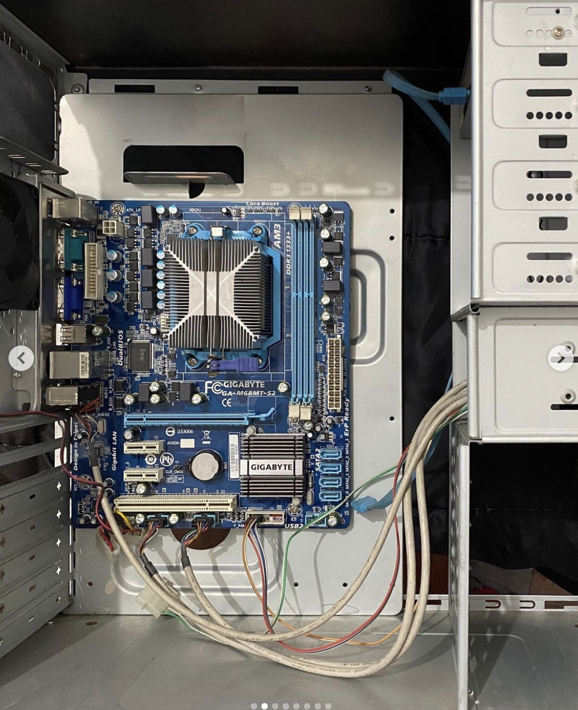
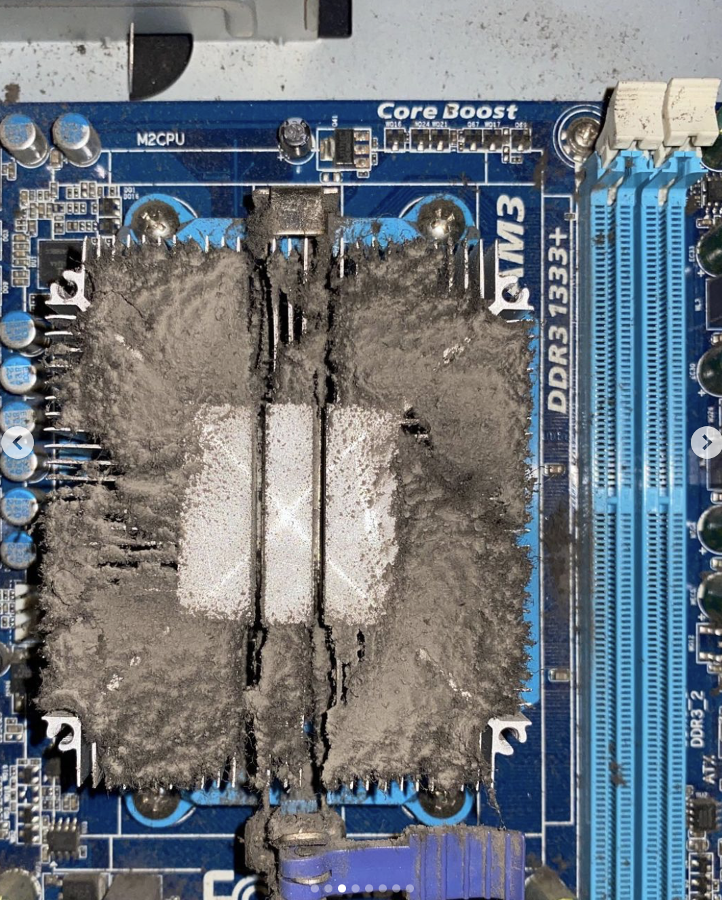
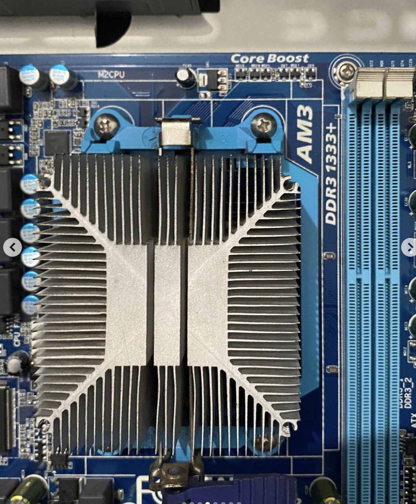
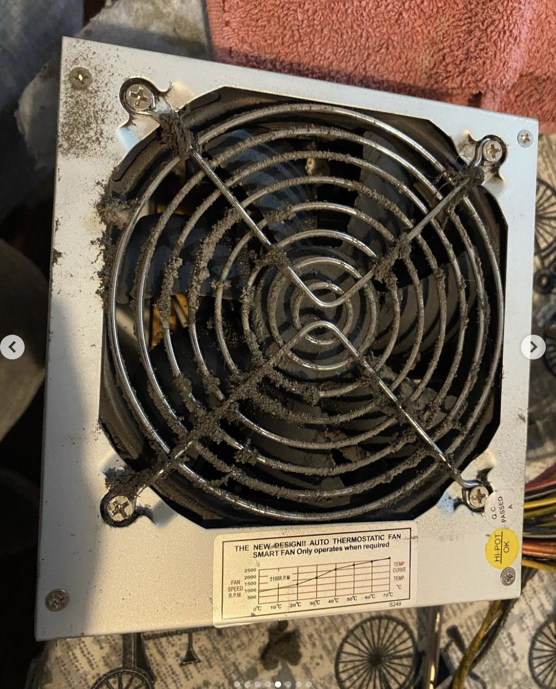
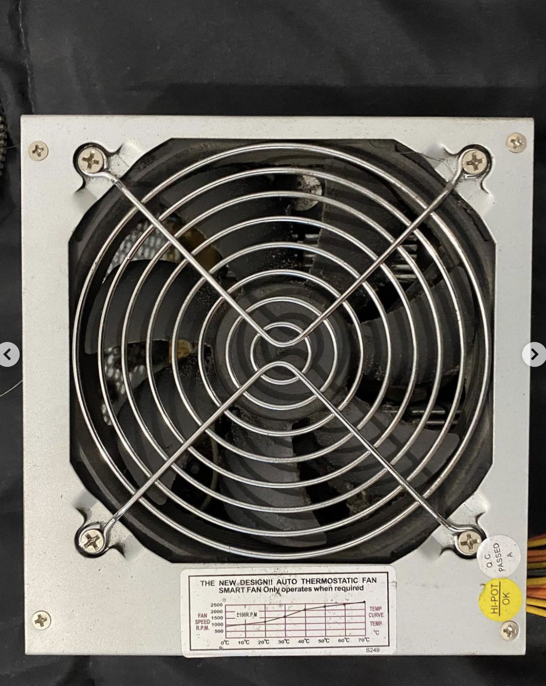

¡Ultimos trabajos realizados, podes ver mas en nuestro INSTAGRAM!
PlayStation 4
Desarme completo por limpieza y cambio de pasta termica
   
Nos llegó esta PS4 de @matycingolani para hacerle un service completo
¿Que le realizamos?
🔷 Desarme completo
🔷 Limpieza de carcasa, fuente, mother, cooler y disipador
🔷 Cambio de pasta térmica por reséquedad (5 años) colocamos ARCTIC MX4
Gracias @matycingolani por confiar en nosotros!
Limpieza integra de PC
Desarme completo de CPU, limpieza, cambio de pasta termica y reparacion de disco
     La computadora vino por que andaba muy lenta,tardaba 20/25 minutos en iniciar y a veces ni siquiera iniciaba
¿Que le realizamos?
🔹Desarme completo del equipo
🔹Limpieza profunda a todos los componentes
🔹Arme de todo el equipo nuevamente
🔹Descubrimos que el disco tenía sectores dañados y los reparamos
🔹Le instalamos Windows 10 32 bits activado + Paquete Office 2010 activado + Controladores correspondientes
Gracias @taamiirosa por confiar!